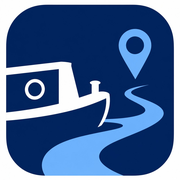

Tap Set Start, then Set End. The app snaps to the nearest canal and plans the way between.
With a route planned, tap Start Navigation for live turn-by-turn guidance along the cut.
Use the layers button to show locks, winding holes, water and sanitary points. Zoom in to see them.
Enter your speed, length and beam so journey times and suitability are tailored to you.
Journey times combine the cruising distance at your chosen boat speed with time added for each lock and tunnel on the route. They're estimates to help you plan — real times vary with conditions, lock queues and how busy the network is.
Red sections may not suit your boat's dimensions, based on the beam and length you've set. Narrow canals have a 7ft beam limit, so a wide-beam boat sees these in red. Always confirm specific restrictions before travelling.
On the Cut loads canal detail around you and fills in more as you move. If detail is missing, give it a moment or pan slightly. A connection helps the first time you visit a new area, after which it's cached on your device.
Locks come from Canal & River Trust open data. Water points, sanitary stations and winding holes come from OpenStreetMap, maintained by the boating community. Both are very good but not guaranteed complete — always carry up-to-date waterway guides.
Canal data you've already loaded is cached on your device, so it stays available where signal is poor. The base map and brand-new areas need a connection. It's wise to open your planned route while you still have signal.
The notices feature links directly to the Canal & River Trust's live notices page, so you always see their latest information. Always check this before setting off.
No. Your location is used only on your device to show your position and provide navigation. It's never collected, stored on a server, or shared with anyone. See the privacy policy for full details.
On the Cut covers the connected canal and navigable river network of England and Wales, including Canal & River Trust waters, Environment Agency rivers, the Norfolk Broads and smaller navigations.
Make sure both points are on the connected network — tap close to a visible canal line so the app can snap to it. Very isolated waterways may not route. If it persists, try points nearer the main network.
Check you've allowed location access in your device Settings → Privacy → Location Services → On the Cut. Navigation needs this to track your position.
Stay safe on the water. On the Cut is a planning and navigation aid only. Waterway data may be incomplete or out of date. Always check current Canal & River Trust notices before travelling, carry up-to-date waterway guides, and use your own judgement on the water.
Happy to help with any question, problem or suggestion.
Email SupportWe aim to reply within a few days.